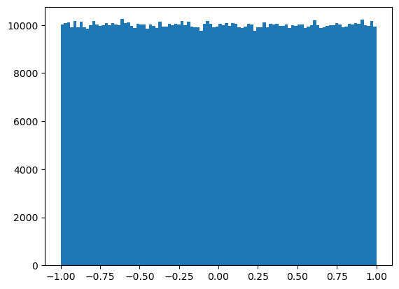
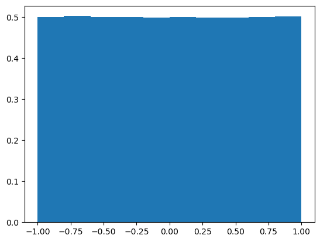
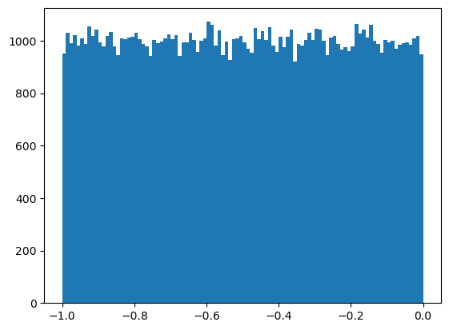
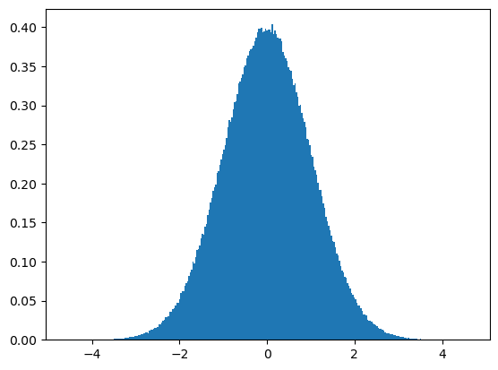
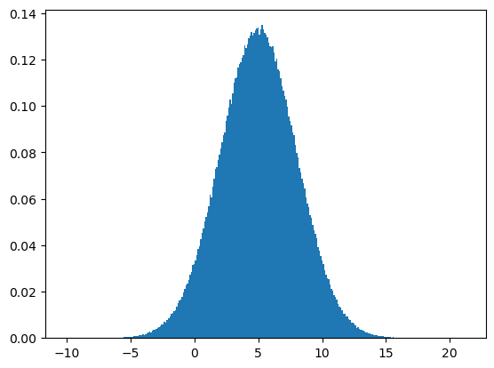
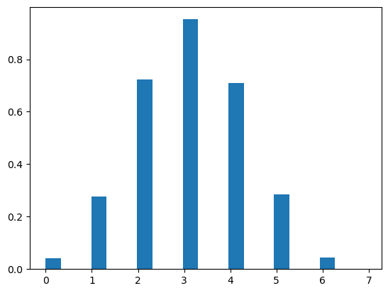
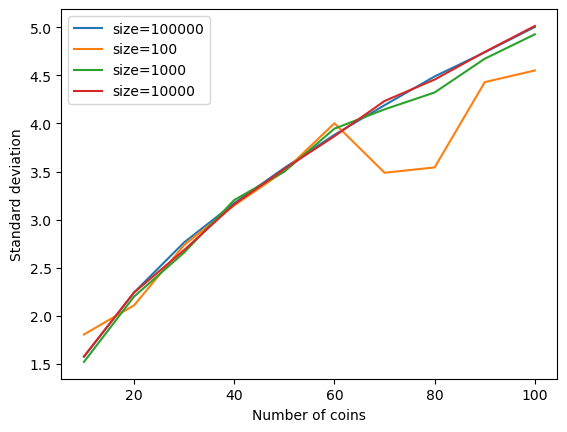
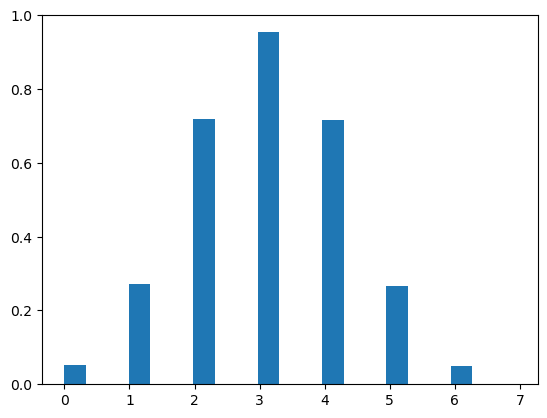
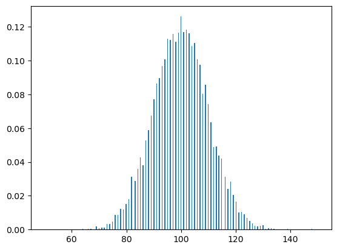
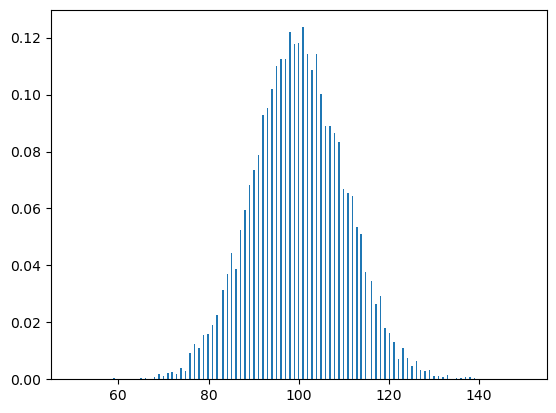

Statistical distributions and python - SOLVED
Contents
Statistical distributions and python - SOLVED#
Random variables are generated using a submodule of numpy called numpy.random. In this notebook we’ve just imported it with the abbreviation rnd.
The submodule contains functions to sample from many different types of probability distributions. Each one has a few parameters, and each also has a size= keyword to decide how many samples to draw from the distribution.
For instance, to flip one fair coin 100 times, we do:
flips = rnd.binomial(1, 0.5, size=100)
For an unfair coin, we change the \(p\) parameter:
flips = rnd.binomial(1, 0.9, size=100)
To look at the results, we can plot a histogram, and we can calculate some summary statistics like mean, variance, and kurtosis.
Let’s start by getting to know some of these probability distributions.
%matplotlib inline
import matplotlib.pyplot as plt
import numpy as np
import numpy.random as rnd
import scipy.stats as sci_rnd
from scipy.stats import kurtosis
import pandas as pd
Uniform Distribution#
The parameters are the lower and upper bounds. Every real value between the limits is equally likely.
dist1 = rnd.uniform(-1., 1., size=1000000)
plt.hist(dist1, bins=100);

There are some options in the histogram that we are using. A histogram divides data into bins. We are setting the number of bins explicitly, rather than letting the hist function determine them automatically. More bins will make the plot look noisier but the shape will be better determined. The more data we have, typically the more bins we can use.
There are two ways to find the mean of an array. Either we do np.mean(arr) or arr.mean(). The first is using a numpy function; it would also work given a list. The second is using a method of the array; each numpy array has this function attached to it.
Exercise#
Plot the histogram of dist 1 such that the integral of the histogram sums to one. (Look at the matplotlib ‘hist’ help pages for hints.)
Think about what the mean of this distribution is. Then check it.
Find the standard deviation by using the function
np.std.
# Answers here
plt.hist(dist1, density=True);
print('The mean is %s' % np.mean(dist1))
print('The std is %s' % np.std(dist1))
The mean is -0.0004941389861823539
The std is 0.577767154349528

If we have \(N\) samples from a distribution, and the samples are called \(y_i\), the mean is
and the standard deviation is
The mean tells us where the middle of the distribution is, the standard deviation is how scattered the samples are around the mean.
Note - the mean and standard deviation calculated by sampling from the distribution are random; there is some scatter around the true values, especially when you have a small number of samples.
Exercise#
Make a uniform distribution with a mean of 2.
Find out whether the standard deviation changes with the number of samples.
Figure out how far apart the upper and lower bounds must be to make the standard deviation double what it is in the example above.
# Answer here
dist2 = rnd.uniform(1., 3., size=1000000)
print('The mean is %s' % dist2.mean())
samp = np.asarray([1000, 10000, 100000, 1000000, 10000000])
for i in range(0,len(samp)):
dist2 = rnd.uniform(1., 3., size=samp[i])
print('The std is %s for %s samples' % (dist2.std(), samp[i]))
dist2 = rnd.uniform(0., 4., size=1000000)
print('The mean is %s' % dist2.mean())
print('The std is %s' % (dist2.std()))
The mean is 1.99920147295638
The std is 0.578000844849578 for 1000 samples
The std is 0.5762513000843356 for 10000 samples
The std is 0.5767448895459238 for 100000 samples
The std is 0.5774838460747724 for 1000000 samples
The std is 0.5774215095756539 for 10000000 samples
The mean is 2.000455815302211
The std is 1.155599924441065
Exercise#
Generate and plot a uniform distirbution using scipy.stats. (Hint: use the help pages)
# Answer here
dist3 = sci_rnd.uniform.rvs(-1, 1., size=100000)
plt.hist(dist3, bins=100)
(array([ 952., 1031., 990., 1021., 981., 1010., 989., 1055., 1019.,
1042., 995., 978., 1019., 1034., 977., 945., 1009., 1005.,
1011., 1016., 1029., 1005., 988., 977., 941., 1004., 990.,
996., 1008., 1025., 1007., 1021., 943., 993., 993., 1031.,
1003., 958., 999., 1008., 1072., 1060., 983., 1040., 944.,
996., 928., 1006., 1009., 1017., 993., 968., 955., 1048.,
1007., 1037., 1004., 1053., 980., 958., 1016., 974., 1015.,
1042., 920., 988., 980., 1002., 1029., 1002., 1046., 1041.,
1000., 945., 1011., 1017., 987., 967., 975., 959., 979.,
1065., 1028., 1043., 1013., 1062., 1000., 989., 955., 1004.,
994., 999., 968., 984., 992., 995., 984., 1009., 1018.,
947.]),
array([-9.99943065e-01, -9.89943754e-01, -9.79944442e-01, -9.69945130e-01,
-9.59945818e-01, -9.49946507e-01, -9.39947195e-01, -9.29947883e-01,
-9.19948571e-01, -9.09949260e-01, -8.99949948e-01, -8.89950636e-01,
-8.79951324e-01, -8.69952013e-01, -8.59952701e-01, -8.49953389e-01,
-8.39954077e-01, -8.29954765e-01, -8.19955454e-01, -8.09956142e-01,
-7.99956830e-01, -7.89957518e-01, -7.79958207e-01, -7.69958895e-01,
-7.59959583e-01, -7.49960271e-01, -7.39960960e-01, -7.29961648e-01,
-7.19962336e-01, -7.09963024e-01, -6.99963713e-01, -6.89964401e-01,
-6.79965089e-01, -6.69965777e-01, -6.59966466e-01, -6.49967154e-01,
-6.39967842e-01, -6.29968530e-01, -6.19969219e-01, -6.09969907e-01,
-5.99970595e-01, -5.89971283e-01, -5.79971971e-01, -5.69972660e-01,
-5.59973348e-01, -5.49974036e-01, -5.39974724e-01, -5.29975413e-01,
-5.19976101e-01, -5.09976789e-01, -4.99977477e-01, -4.89978166e-01,
-4.79978854e-01, -4.69979542e-01, -4.59980230e-01, -4.49980919e-01,
-4.39981607e-01, -4.29982295e-01, -4.19982983e-01, -4.09983672e-01,
-3.99984360e-01, -3.89985048e-01, -3.79985736e-01, -3.69986425e-01,
-3.59987113e-01, -3.49987801e-01, -3.39988489e-01, -3.29989177e-01,
-3.19989866e-01, -3.09990554e-01, -2.99991242e-01, -2.89991930e-01,
-2.79992619e-01, -2.69993307e-01, -2.59993995e-01, -2.49994683e-01,
-2.39995372e-01, -2.29996060e-01, -2.19996748e-01, -2.09997436e-01,
-1.99998125e-01, -1.89998813e-01, -1.79999501e-01, -1.70000189e-01,
-1.60000878e-01, -1.50001566e-01, -1.40002254e-01, -1.30002942e-01,
-1.20003631e-01, -1.10004319e-01, -1.00005007e-01, -9.00056952e-02,
-8.00063835e-02, -7.00070717e-02, -6.00077600e-02, -5.00084482e-02,
-4.00091364e-02, -3.00098247e-02, -2.00105129e-02, -1.00112012e-02,
-1.18894013e-05]),
<BarContainer object of 100 artists>)

Normal distribution#
Also known as a Gaussian distribution. It is a probability distribution that is symmetric about the mean, showing that data near the mean occur more frequently than data far from the mean, i.e 68% occur within 1 standard deviation, 95% within 2 standard deviations and 99.7% within 3 standard deviations. There are lots of things in natural and social sciences that are normally or approximately normally distributed (i.e. people’s height).
The parameters are the center value and the width. This is also called a Gaussian distribution.
dist2 = rnd.normal(0., 1., size=1000000)
plt.hist(dist2, bins=300, density=True);
# Aside: try removing the semi-colon from the end of this code

Exercise#
How are the mean and standard deviation related to the central value and width specified when calling the function? Can you make a normal with a mean of 5? Can you make the standard deviation 3?
# Answer here
dist3 = rnd.normal(5., 3., size=1000000)
plt.hist(dist3, bins=300, density=True);
print('The mean is %s' % dist3.mean())
print('The std is %s' % dist3.std())
The mean is 5.000589162548842
The std is 3.0005472397097233

Exercise#
Generate and plot a normal distirbution using scipy.stats.
# Answer here
dist4 = sci_rnd.norm.rvs(0, 1., size=1000000);
plt.hist(dist4, bins=300, density=True)
(array([3.12503389e-05, 0.00000000e+00, 0.00000000e+00, 0.00000000e+00,
0.00000000e+00, 0.00000000e+00, 0.00000000e+00, 0.00000000e+00,
0.00000000e+00, 0.00000000e+00, 3.12503389e-05, 3.12503389e-05,
3.12503389e-05, 6.25006778e-05, 3.12503389e-05, 0.00000000e+00,
6.25006778e-05, 9.37510168e-05, 0.00000000e+00, 3.12503389e-05,
3.12503389e-05, 6.25006778e-05, 1.25001356e-04, 6.25006778e-05,
9.37510168e-05, 3.12503389e-05, 1.25001356e-04, 1.87502034e-04,
1.25001356e-04, 2.81253050e-04, 2.50002711e-04, 1.87502034e-04,
1.56251695e-04, 2.50002711e-04, 1.25001356e-04, 1.87502034e-04,
4.37504745e-04, 5.00005423e-04, 3.43753728e-04, 6.87507456e-04,
7.50008134e-04, 7.18757795e-04, 1.09376186e-03, 9.37510168e-04,
8.75009490e-04, 1.25001356e-03, 1.43751559e-03, 1.31251423e-03,
1.59376728e-03, 1.87502034e-03, 1.90627067e-03, 2.31252508e-03,
2.09377271e-03, 3.00003254e-03, 3.28128559e-03, 3.50003796e-03,
3.93754270e-03, 4.06254406e-03, 4.87505287e-03, 4.90630321e-03,
5.28130728e-03, 6.09381609e-03, 6.21881745e-03, 7.75008405e-03,
7.68758337e-03, 7.65633304e-03, 1.00001085e-02, 1.13438730e-02,
1.14063737e-02, 1.25001356e-02, 1.35313968e-02, 1.45939083e-02,
1.57501708e-02, 1.85939517e-02, 1.87502034e-02, 2.07814754e-02,
2.24377433e-02, 2.31877515e-02, 2.50315215e-02, 2.77190506e-02,
3.00628260e-02, 3.15628423e-02, 3.53753837e-02, 3.76566584e-02,
3.99691835e-02, 4.36254731e-02, 4.37192242e-02, 4.73130131e-02,
4.97817899e-02, 5.47818441e-02, 5.97193977e-02, 6.07506589e-02,
6.51882070e-02, 7.07507673e-02, 7.34695468e-02, 7.81258473e-02,
8.40634117e-02, 8.52196742e-02, 9.01572278e-02, 9.57197881e-02,
1.05751147e-01, 1.06344903e-01, 1.14001236e-01, 1.19688798e-01,
1.26907626e-01, 1.33720200e-01, 1.36532731e-01, 1.47907854e-01,
1.54751678e-01, 1.61501752e-01, 1.67158063e-01, 1.72876875e-01,
1.85064507e-01, 1.85064507e-01, 1.93345847e-01, 2.01377184e-01,
2.05595980e-01, 2.12346053e-01, 2.31502511e-01, 2.30815003e-01,
2.39127593e-01, 2.45846416e-01, 2.55096517e-01, 2.63971613e-01,
2.71284192e-01, 2.78034265e-01, 2.88128125e-01, 2.95971960e-01,
3.02909535e-01, 3.10128363e-01, 3.24066015e-01, 3.17565944e-01,
3.32753609e-01, 3.28909817e-01, 3.41034949e-01, 3.44628738e-01,
3.51785065e-01, 3.55347604e-01, 3.64441453e-01, 3.70004013e-01,
3.70379017e-01, 3.70347767e-01, 3.85035426e-01, 3.85754184e-01,
3.89972979e-01, 3.89160471e-01, 3.95785542e-01, 3.93410517e-01,
3.94816782e-01, 4.01848108e-01, 3.97348059e-01, 4.03691878e-01,
4.05254395e-01, 3.96816804e-01, 3.92754260e-01, 3.95348038e-01,
3.97723063e-01, 3.90035480e-01, 3.90504235e-01, 3.90379234e-01,
3.87285450e-01, 3.77660346e-01, 3.79504116e-01, 3.70097764e-01,
3.70566519e-01, 3.58097634e-01, 3.59472649e-01, 3.50035046e-01,
3.44566237e-01, 3.41909958e-01, 3.31222342e-01, 3.30097330e-01,
3.20097222e-01, 3.12378388e-01, 3.09972112e-01, 2.96190712e-01,
2.92034417e-01, 2.85909351e-01, 2.77440509e-01, 2.72784208e-01,
2.58190300e-01, 2.55377770e-01, 2.48440194e-01, 2.37627577e-01,
2.32346270e-01, 2.23033669e-01, 2.17002353e-01, 2.09814776e-01,
2.03970962e-01, 1.90189563e-01, 1.88127040e-01, 1.77220672e-01,
1.72033116e-01, 1.64251781e-01, 1.55782940e-01, 1.51314141e-01,
1.41345283e-01, 1.36657732e-01, 1.30438915e-01, 1.27751386e-01,
1.21845071e-01, 1.13063726e-01, 1.10001193e-01, 1.05532395e-01,
9.57197881e-02, 9.08759856e-02, 8.61884347e-02, 8.16258853e-02,
7.75945915e-02, 7.31570434e-02, 6.77194844e-02, 6.54069594e-02,
6.10631623e-02, 5.70318685e-02, 5.38443340e-02, 5.05942987e-02,
4.74067641e-02, 4.31567181e-02, 4.13441984e-02, 3.78441604e-02,
3.57503877e-02, 3.42503715e-02, 3.06878328e-02, 2.96565716e-02,
2.64065364e-02, 2.38440086e-02, 2.29064984e-02, 2.11877298e-02,
1.90627067e-02, 1.89064550e-02, 1.75001898e-02, 1.62814266e-02,
1.54064171e-02, 1.27813886e-02, 1.17188771e-02, 9.96885812e-03,
1.02188608e-02, 9.50010303e-03, 8.75009490e-03, 9.06259829e-03,
6.40631948e-03, 6.34381880e-03, 5.62506101e-03, 5.65631134e-03,
4.87505287e-03, 4.71880118e-03, 4.46879847e-03, 3.78129101e-03,
3.31253593e-03, 2.93753186e-03, 3.06253321e-03, 2.46877677e-03,
1.93752101e-03, 2.21877406e-03, 1.81251966e-03, 1.21876322e-03,
1.43751559e-03, 1.25001356e-03, 9.37510168e-04, 1.34376457e-03,
9.68760507e-04, 7.81258473e-04, 7.18757795e-04, 6.87507456e-04,
4.68755084e-04, 3.75004067e-04, 3.43753728e-04, 5.62506101e-04,
5.93756440e-04, 1.56251695e-04, 3.75004067e-04, 3.75004067e-04,
1.56251695e-04, 1.56251695e-04, 1.56251695e-04, 1.56251695e-04,
1.25001356e-04, 6.25006778e-05, 1.25001356e-04, 3.12503389e-05,
6.25006778e-05, 6.25006778e-05, 6.25006778e-05, 9.37510168e-05,
0.00000000e+00, 9.37510168e-05, 3.12503389e-05, 6.25006778e-05,
6.25006778e-05, 3.12503389e-05, 0.00000000e+00, 0.00000000e+00,
3.12503389e-05, 6.25006778e-05, 0.00000000e+00, 0.00000000e+00,
0.00000000e+00, 0.00000000e+00, 0.00000000e+00, 3.12503389e-05]),
array([-4.86164011e+00, -4.82964046e+00, -4.79764080e+00, -4.76564115e+00,
-4.73364150e+00, -4.70164184e+00, -4.66964219e+00, -4.63764254e+00,
-4.60564288e+00, -4.57364323e+00, -4.54164358e+00, -4.50964393e+00,
-4.47764427e+00, -4.44564462e+00, -4.41364497e+00, -4.38164531e+00,
-4.34964566e+00, -4.31764601e+00, -4.28564636e+00, -4.25364670e+00,
-4.22164705e+00, -4.18964740e+00, -4.15764774e+00, -4.12564809e+00,
-4.09364844e+00, -4.06164878e+00, -4.02964913e+00, -3.99764948e+00,
-3.96564983e+00, -3.93365017e+00, -3.90165052e+00, -3.86965087e+00,
-3.83765121e+00, -3.80565156e+00, -3.77365191e+00, -3.74165226e+00,
-3.70965260e+00, -3.67765295e+00, -3.64565330e+00, -3.61365364e+00,
-3.58165399e+00, -3.54965434e+00, -3.51765468e+00, -3.48565503e+00,
-3.45365538e+00, -3.42165573e+00, -3.38965607e+00, -3.35765642e+00,
-3.32565677e+00, -3.29365711e+00, -3.26165746e+00, -3.22965781e+00,
-3.19765815e+00, -3.16565850e+00, -3.13365885e+00, -3.10165920e+00,
-3.06965954e+00, -3.03765989e+00, -3.00566024e+00, -2.97366058e+00,
-2.94166093e+00, -2.90966128e+00, -2.87766163e+00, -2.84566197e+00,
-2.81366232e+00, -2.78166267e+00, -2.74966301e+00, -2.71766336e+00,
-2.68566371e+00, -2.65366405e+00, -2.62166440e+00, -2.58966475e+00,
-2.55766510e+00, -2.52566544e+00, -2.49366579e+00, -2.46166614e+00,
-2.42966648e+00, -2.39766683e+00, -2.36566718e+00, -2.33366753e+00,
-2.30166787e+00, -2.26966822e+00, -2.23766857e+00, -2.20566891e+00,
-2.17366926e+00, -2.14166961e+00, -2.10966995e+00, -2.07767030e+00,
-2.04567065e+00, -2.01367100e+00, -1.98167134e+00, -1.94967169e+00,
-1.91767204e+00, -1.88567238e+00, -1.85367273e+00, -1.82167308e+00,
-1.78967343e+00, -1.75767377e+00, -1.72567412e+00, -1.69367447e+00,
-1.66167481e+00, -1.62967516e+00, -1.59767551e+00, -1.56567585e+00,
-1.53367620e+00, -1.50167655e+00, -1.46967690e+00, -1.43767724e+00,
-1.40567759e+00, -1.37367794e+00, -1.34167828e+00, -1.30967863e+00,
-1.27767898e+00, -1.24567933e+00, -1.21367967e+00, -1.18168002e+00,
-1.14968037e+00, -1.11768071e+00, -1.08568106e+00, -1.05368141e+00,
-1.02168175e+00, -9.89682101e-01, -9.57682449e-01, -9.25682796e-01,
-8.93683143e-01, -8.61683490e-01, -8.29683837e-01, -7.97684184e-01,
-7.65684531e-01, -7.33684878e-01, -7.01685225e-01, -6.69685572e-01,
-6.37685919e-01, -6.05686266e-01, -5.73686613e-01, -5.41686960e-01,
-5.09687307e-01, -4.77687654e-01, -4.45688001e-01, -4.13688348e-01,
-3.81688695e-01, -3.49689042e-01, -3.17689390e-01, -2.85689737e-01,
-2.53690084e-01, -2.21690431e-01, -1.89690778e-01, -1.57691125e-01,
-1.25691472e-01, -9.36918189e-02, -6.16921660e-02, -2.96925130e-02,
2.30713994e-03, 3.43067929e-02, 6.63064458e-02, 9.83060988e-02,
1.30305752e-01, 1.62305405e-01, 1.94305058e-01, 2.26304711e-01,
2.58304364e-01, 2.90304016e-01, 3.22303669e-01, 3.54303322e-01,
3.86302975e-01, 4.18302628e-01, 4.50302281e-01, 4.82301934e-01,
5.14301587e-01, 5.46301240e-01, 5.78300893e-01, 6.10300546e-01,
6.42300199e-01, 6.74299852e-01, 7.06299505e-01, 7.38299158e-01,
7.70298811e-01, 8.02298464e-01, 8.34298117e-01, 8.66297770e-01,
8.98297422e-01, 9.30297075e-01, 9.62296728e-01, 9.94296381e-01,
1.02629603e+00, 1.05829569e+00, 1.09029534e+00, 1.12229499e+00,
1.15429465e+00, 1.18629430e+00, 1.21829395e+00, 1.25029360e+00,
1.28229326e+00, 1.31429291e+00, 1.34629256e+00, 1.37829222e+00,
1.41029187e+00, 1.44229152e+00, 1.47429118e+00, 1.50629083e+00,
1.53829048e+00, 1.57029013e+00, 1.60228979e+00, 1.63428944e+00,
1.66628909e+00, 1.69828875e+00, 1.73028840e+00, 1.76228805e+00,
1.79428771e+00, 1.82628736e+00, 1.85828701e+00, 1.89028666e+00,
1.92228632e+00, 1.95428597e+00, 1.98628562e+00, 2.01828528e+00,
2.05028493e+00, 2.08228458e+00, 2.11428423e+00, 2.14628389e+00,
2.17828354e+00, 2.21028319e+00, 2.24228285e+00, 2.27428250e+00,
2.30628215e+00, 2.33828181e+00, 2.37028146e+00, 2.40228111e+00,
2.43428076e+00, 2.46628042e+00, 2.49828007e+00, 2.53027972e+00,
2.56227938e+00, 2.59427903e+00, 2.62627868e+00, 2.65827833e+00,
2.69027799e+00, 2.72227764e+00, 2.75427729e+00, 2.78627695e+00,
2.81827660e+00, 2.85027625e+00, 2.88227591e+00, 2.91427556e+00,
2.94627521e+00, 2.97827486e+00, 3.01027452e+00, 3.04227417e+00,
3.07427382e+00, 3.10627348e+00, 3.13827313e+00, 3.17027278e+00,
3.20227243e+00, 3.23427209e+00, 3.26627174e+00, 3.29827139e+00,
3.33027105e+00, 3.36227070e+00, 3.39427035e+00, 3.42627001e+00,
3.45826966e+00, 3.49026931e+00, 3.52226896e+00, 3.55426862e+00,
3.58626827e+00, 3.61826792e+00, 3.65026758e+00, 3.68226723e+00,
3.71426688e+00, 3.74626653e+00, 3.77826619e+00, 3.81026584e+00,
3.84226549e+00, 3.87426515e+00, 3.90626480e+00, 3.93826445e+00,
3.97026411e+00, 4.00226376e+00, 4.03426341e+00, 4.06626306e+00,
4.09826272e+00, 4.13026237e+00, 4.16226202e+00, 4.19426168e+00,
4.22626133e+00, 4.25826098e+00, 4.29026064e+00, 4.32226029e+00,
4.35425994e+00, 4.38625959e+00, 4.41825925e+00, 4.45025890e+00,
4.48225855e+00, 4.51425821e+00, 4.54625786e+00, 4.57825751e+00,
4.61025716e+00, 4.64225682e+00, 4.67425647e+00, 4.70625612e+00,
4.73825578e+00]),
<BarContainer object of 300 artists>)
Binomial#
The binomial is a discrete distribution. It has only natural numbers (non-negative integers).
The binomial distribution is sampled (for example) from flipping \(n\) coins each with probability \(p\) of landing heads. Each sample is the number of coins that landed heads when they were all flipped.
dist3 = rnd.binomial(6, 0.5, size=10000)
plt.hist(dist3, bins=np.arange(0,7,0.33), density=True);

Exercise#
If the coin is fair (p = 0.5), what do you expect the mean to be in terms of the number of coins flipped?
Check whether your prediction is right.
What happens to the mean when you make the coin unfair (more likely to land heads)?
Write some code to vary the number of coins (over a large range), calculate the standard deviation, and then make a plot of one versus the other.
Think about this. Do you expect more or less scatter in the fraction of coin landing heads as the number increases. Is this what you observe? Plot histograms of various binomial distributions with same p but different n on the same plot and verify their shape makes sense.
# Number 1 and 2
print('Out of 6 coin tosses I would expect 3 to turn up as heads')
print('The mean is %s' % dist3.mean())
# Number 3
dist4 = rnd.binomial(6, 0.9, size=10000)
print('The mean is %s' % dist4.mean())
# Number 4
num_coins = np.linspace(10,100,10)
dist5_std = np.zeros(len(num_coins))
for i in range(0,len(num_coins)):
dist5 = rnd.binomial(num_coins[i], 0.5, size=10000)
dist5_std[i] = dist5.std()
plt.plot(num_coins, dist5_std, label='size=100000');
plt.xlabel('Number of coins')
plt.ylabel('Standard deviation')
# Number 5
diff_size = [100,1000,10000]
for j in range(0,len(diff_size)):
dist6_std = np.zeros(len(num_coins))
for i in range(0,len(num_coins)):
dist6 = rnd.binomial(num_coins[i], 0.5, size=diff_size[j])
dist6_std[i] = dist6.std()
plt.plot(num_coins, dist6_std, label=('size=%s' % diff_size[j]));
plt.legend()
Out of 6 coin tosses I would expect 3 to turn up as heads
The mean is 3.0037
The mean is 5.4004
<matplotlib.legend.Legend at 0x15763dd90>

Exercise#
Generate and plot a binomial distirbution using scipy.stats.
# Answer here
dist3 = sci_rnd.binom.rvs(6, 0.5, size=10000);
plt.hist(dist3, bins=np.arange(0,7,0.33), density=True);

Poisson distribution#
The Poisson distribution describes the distribution of number of counts in an interval when things are arriving randomly. The parameter is the average rate. A typical example is the number of counts due to radioactive decay. The clicks of a Geiger counter are a Poisson process.
dist4 = rnd.poisson(100, size=10000);
plt.hist(dist4, bins=np.arange(50,150,0.33), density=True);

Exercise#
Does the mean match the average rate?
# Answer here
print('The mean is %s' % dist4.mean())
print('The mean is very close to the average rate')
The mean is 99.8715
The mean is very close to the average rate
Exercise#
Generate and plot a Poisson distribution using scipy.stats.
# Answer here
dist5 = sci_rnd.poisson.rvs(100, size=10000)
plt.hist(dist5, bins=np.arange(50,150,0.33), density=True);
